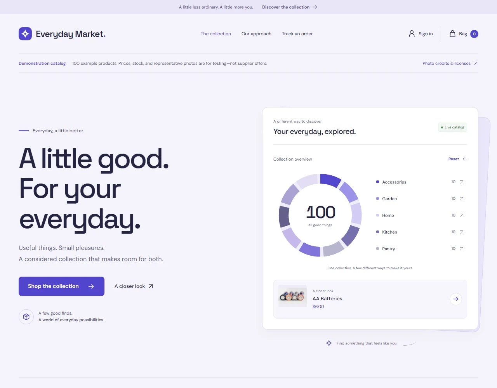
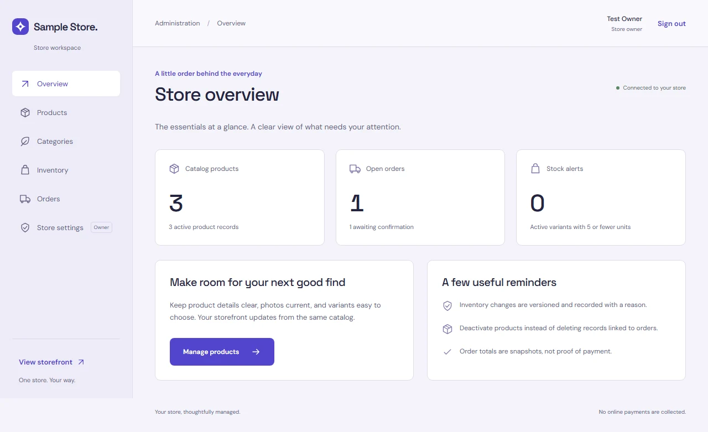

Start the demo API
backend\.venv\Scripts\python.exe demo/serve.pyLoopback API: 127.0.0.1:8004/docs
Interactive project guide
A considered shopping experience, a practical admin panel, and a FastAPI backend. Built to become your next independent store.
Explore the featuresThis is documentation, not a live store.
No online payments are collected by the application.

A connected storefrontDiscovery through order confirmation.
A role-aware workspaceStaff operations. Owner controls.
An independent backendOne store per deployment and database.
What is actually included
Select an area, search for a capability,
then open a feature for the details.
JavaScript is off. All features and technology sections remain available; open any item to read it.
24 feature groups
Open any item to exploreInteractive category counts, selection and reset, plus a product preview. Catalogs above 100 products show a labeled snapshot.
Server-side search, category filters, result counts, and 12-product pagination. Loading, empty, and connection-error states are included.
Descriptions, photographs, flexible attributes, price and availability, variant selection, and fallback artwork. Demo photos carry source and license credits.
Session-backed bag, quantity controls, removal, availability checks, and subtotals. Guest and customer bags merge on login; bags do not reserve stock.
Contact details, optional notes, enabled pickup/shipping/local delivery, address validation, server quotes, tax and fees. Changed quotes require a new review; no payment is collected.
Durable idempotency keys, payload fingerprints, and cross-tab Web Locks. Retry the same details in the same session after uncertainty; do not clear unresolved retry data.
Registration, sign-in/out, recent account orders, guest reference/key lookup, a downloadable guest receipt, and pending-order cancellation. Keys stay out of URLs and browser storage.
Responsive layouts, self-hosted Space Grotesk and DM Sans, labeled forms, focus-managed dialogs, keyboard controls, and actionable feedback. Automated accessibility checks are not a manual audit.
Lazy-loaded /admin, staff/owner sign-in, backend-enforced roles, CLI-created owners, and no public privileged registration. Private caches clear when lost access is detected.
Product and active-product counts, open and pending orders, and low-stock alerts for active variants with five or fewer units. Not revenue or payment analytics.
Create and edit names, slugs, descriptions and active state. Inactive categories stay editable and hide their products from the public collection.
Search, filters, pagination, product descriptions, category, featured/active flags, and key=value attributes. Save up to 10 photo URLs; the storefront shows the first. No file-upload service is included.
Create unique SKUs, names, options, prices, active states and opening stock. Version-check edits; existing SKUs are read-only in the UI.
Stock/SKU/version views, low-stock filtering, signed adjustments, required reasons, and idempotent recovery. Stale writes are rejected; uncertain intent is preserved across reloads and tabs.
Filter and paginate orders, read contact/address/notes and line snapshots, and inspect the status timeline. Valid pickup/shipping transitions and one-time stock restoration on cancellation are enforced.
Name, description, contact email, country, timezone, supported currency, fixed tax, pickup, shipping fee, local-delivery fee/postal codes. Currency locks after prices exist; unconfigured tax blocks checkout.
Pydantic request/response validation, typed catalog and staff APIs, Zod frontend validation, and interactive OpenAPI docs. Profile edits and price-range filters are API-level capabilities.
Argon2 passwords, opaque HttpOnly sessions, hashed session tokens, CSRF checks, allowed hosts/origins, rate limits, and no-store API responses. Production also needs HTTPS and edge controls.
SQLAlchemy, Alembic, SQLite locally, and PostgreSQL in production. Transactional orders, price snapshots, row locking, and status/stock records support correctness under concurrency.
Ten mixed categories with ten initial products each, one standard variant, sample USD prices and stock. Its own database, secret, cookie and loopback ports isolate it from another development store.
100 content-hashed WebP images, pinned creator/source/license/hash/change notices, and public attribution. CC0, CC BY, and CC BY-SA rules apply; photos are representative, not supplier-exact.
CLI bootstrap, owner creation, cleanup, and small sample seeding. The general demo importer requires empty application tables initially and uses private identity to preserve later operator changes.
Pytest and coverage, PostgreSQL race tests, Vitest, Playwright storefront/admin/demo suites, axe checks, Ruff, dependency audits, and GitHub Actions workflows. Local skips are documented.
Static Vite build, a non-root API Docker image, and same-origin /api proxying. Each store needs its own database, secret, cookie and domain. This is not a shared multi-tenant marketplace.
Try another term, or return to the complete guide.
The tools behind the product
No new runtime dependencies
are needed for this guide.
Typed components, server-state caching, runtime response validation, and a separately loaded admin bundle. Space Grotesk and DM Sans are self-hosted in the app and this guide.
Validated APIs, transactional operations and migration-managed storage. SQLite makes local setup light; PostgreSQL supplies production persistence and row-level locking.
Backend, unit, browser, concurrency, accessibility and dependency checks. A green SQLite suite does not prove PostgreSQL race behavior; a manual screen-reader audit is still needed.
Non-root API container, static frontend build, CI definitions, independent databases and operator bootstrap. Keep .env, local credentials, test artifacts and databases out of Git.
Behind the collection
Manage products, variants, stock, and order fulfillment in one workspace. Staff handle the day-to-day; owners control the store settings.
Read the administration guideSynthetic test-store capture. Not customer data or revenue analytics.

A map for the next person
src/components/ Storefront and checkoutsrc/admin/ Protected workspacesrc/lib/ API, schemas, retry guardspublic/demo-photos/ Credited local imagestests/ · e2e*/ Unit and browser checksapp/routers/ Catalog, auth, carts, ordersapp/services/ Transactional business rulesapp/models.py Persistence modelsmigrations/ Alembic historytests/ API and concurrency coveragecatalog.json Pinned products and photo metadataimport_catalog.py Guarded importserve.py Loopback demo runnercollect_photos.py Optional photo refreshfeature-explorer.html This interactive guidefeature-explorer.css / .js Offline presentationassets/ Previews, banner, licensed fontssuperpowers/plans/ Implementation recordworkflows/backend.yml Backend verificationworkflows/frontend.yml Frontend and guide verificationREADME.md Visual GitHub entry point
From repository to local store
Python 3.11+ and Node.js 24 LTS.
Commands below use Windows PowerShell.
After cloning the repository, install the backend and frontend dependencies using the full setup instructions. Then start these in separate terminals. No photo-generation dependencies or network collection are needed.
backend\.venv\Scripts\python.exe demo/serve.pyLoopback API: 127.0.0.1:8004/docs
Set-Location frontend
$env:STORE_API_TARGET = 'http://127.0.0.1:8004'
npm.cmd run dev -- --host 127.0.0.1 --port 5176 --strictPortStorefront: 127.0.0.1:5176 · Admin: /admin
The local runner creates a random owner password in ignored demo/.local/access.json. Open it privately. Never commit or share that file.
This application does not include online payments, refunds, password recovery, staff-user management UI, email/SMS notifications, uploaded-media storage, carrier tracking, advanced tax determination, or regulated-goods compliance.
Before launch: configure HTTPS, PostgreSQL, tax and fulfillment, backups, monitoring and edge security. Replace sample merchandise with supplier-approved content and follow every photo license.